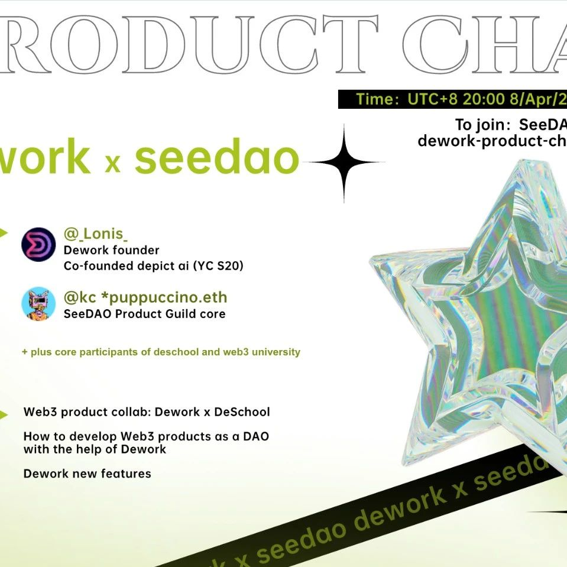

Dework x SeeDAO 产品交流会
作者: the seedao
本周五晚八点，来SeeDAO与Dework创始人一起聊聊web3产品！

北京时间4月8日（本周五）晚八点，Dework创始人将来到SeeDAO Discord dework-product-chat频道进行一场产品交流会。Dework是一款集合web3产品管理工具、任务发布平台以及web3领英功能的强大产品，在Dework中可实现链上贡献记录，目前拥有一批优秀的DAO入驻其中。他们将对Dework与SeeDAO产品开发模式展开探讨。1、web3产品合作：Dework与DeSchool2、如何运用Dework等工具以DAO的方式开发一款Web3产品SeeDAO Discord：discord.gg/seedaohttps://discord.com/channels/841189467128594442/961175460455264296Dework官方推特：https://twitter.com/deworkxyz